链接和加载：从 ELF 到动态链接的完整路径
课程：2026 春季学期《操作系统原理》
讲师：蒋炎岩（jyy）
官方课程主页：https://jyywiki.cn/OS/2026/
官方讲义：https://jyywiki.cn/OS/2026/lect11.md
视频来源：Bilibili BV1CoDzB5Eey
版权说明：课程讲义与幻灯片归蒋炎岩所有，采用 Creative Commons BY-NC 4.0 许可；本电子书是对课堂讲授的书面化重构，保留出处与许可说明。
导语：可执行文件到底是什么
(参考时间: 00:00)
前面的课程一直在讨论：如何从系统调用构建 libc，再从 libc 构建普通应用。这一讲回到应用运行之前的关键一步：
可执行文件如何描述一个进程的初始内存状态，操作系统又如何把它加载起来？
在学习操作系统之前，很多人会把它理解为“双击后弹出窗口的东西”。进入操作系统视角后，可执行文件实际上是一个普通文件对象：
- 它有字节序列，可以用
cat、十六进制编辑器或文本编辑器查看； - 通常以 ELF 魔数
0x7f 'E' 'L' 'F'开头； - 它描述代码、数据、只读内容和其它段应该被映射到进程地址空间的哪些位置；
- 它还可能包含符号表、重定位信息、调试信息和动态链接器路径。
flowchart LR
A["普通文件对象"] --> B["字节序列"]
B --> C["ELF / a.out / 其它格式"]
C --> D["描述段、权限、入口与重定位"]
D --> E["execve 创建进程初始状态"]
E --> F["第一条用户态指令开始执行"]
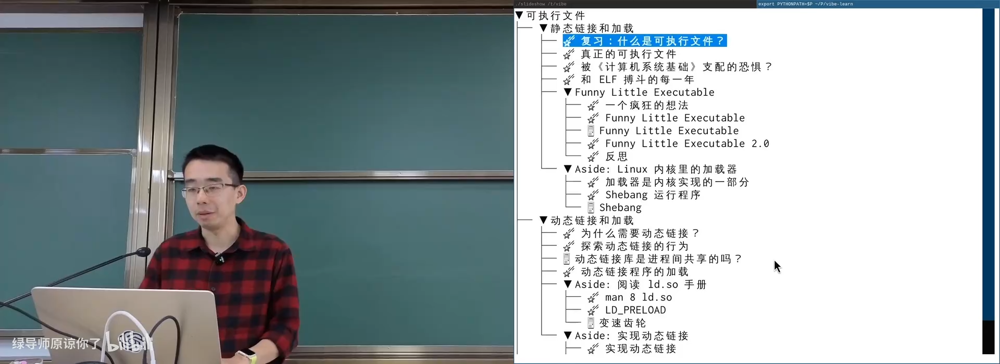
📷 从文件视角查看一个 ELF 可执行文件
回到原视频 (00:01:35)
1. 从 a.out 到 ELF
1.1 可执行文件描述进程初始状态
(参考时间: 00:02)
观察 /bin/ls：
file /bin/ls
xxd -l 64 /bin/ls
readelf -h /bin/ls
输出会显示：
ELF 64-bit LSB executable
ELF 文件头前面的字节通常是：
7f 45 4c 46
小端机器按字节显示为 7f 45 4c 46，而 45 4c 46 正是 ASCII 的 ELF。
从内核角度看，execve(path, argv, envp) 会：
- 读取
path对应的文件； - 判断文件格式；
- 建立新的用户态地址空间；
- 把代码、数据等映像按要求映射到地址空间；
- 在初始栈上布置
argc、argv、envp和 auxiliary vector； - 把 PC 设置为程序入口，再把控制权交给用户态。
flowchart TD
A["execve(path, argv, envp)"] --> B["打开并读取可执行文件"]
B --> C{"识别文件格式"}
C -- "ELF" --> D["解析 ELF header / program headers"]
C -- "shebang" --> E["启动解释器"]
D --> F["映射 PT_LOAD 段"]
F --> G["建立 initial process stack"]
G --> H["PC ← entry point"]
H --> I["开始执行第一条指令"]
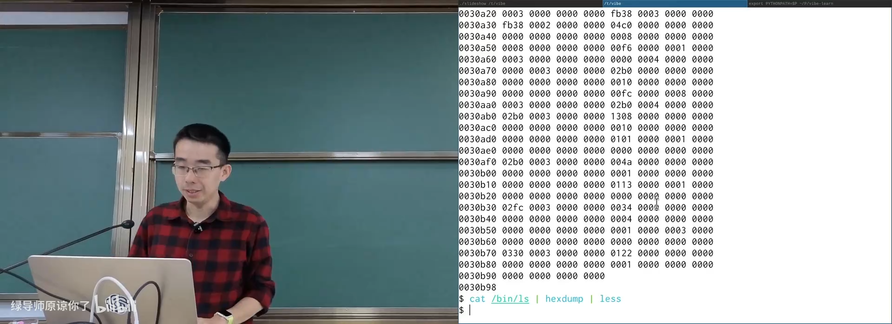
📷 ELF 文件头与可执行文件基本信息
回到原视频 (00:02:20)
1.2 UNIX a.out 的极简结构
(参考时间: 00:04)
早期 UNIX 使用 a.out 格式，其中 a 来自 assembler output。FreeBSD 手册中还能看到相近的定义：
struct exec {
uint32_t a_midmag; /* Machine ID & Magic */
uint32_t a_text; /* Text segment size */
uint32_t a_data; /* Data segment size */
uint32_t a_bss; /* BSS segment size */
uint32_t a_syms; /* Symbol table size */
uint32_t a_entry; /* Entry point */
uint32_t a_trsize; /* Text reloc table size */
uint32_t a_drsize; /* Data reloc table size */
};
a.out 的代码和数据没有显式加载地址，位置通常由系统平台约定。它也缺少后来的许多能力：
- 动态链接；
- 调试信息；
- 复杂的对齐要求；
- thread-local storage；
- 更灵活的段权限和加载布局。
所有复杂格式都是从简单格式逐渐演化出来的。ELF 不是凭空出现，而是为了满足这些不断增长的需求。
flowchart LR
A["a.out: 代码 / 数据 / BSS / 符号 / 入口"] --> B["平台固定加载位置"]
B --> C["静态链接"]
C --> D["新增动态链接、调试、TLS、对齐和安全需求"]
D --> E["ELF"]
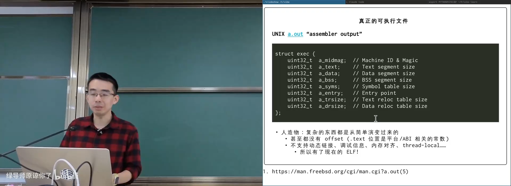
📷 AI 阅读 `a.out` 手册中的结构与重定位能力
回到原视频 (00:05:30)
1.3 ELF 为什么让人痛苦
(参考时间: 00:07)
System V ABI 定义了：
- 进程初始化；
- 初始进程栈；
- 目标文件格式；
- 段、节、符号和重定位语义。
ELF 极其强大，但设计取向是机器效率：
- 紧致的 bitfield；
- 大量基于 offset 的索引；
- 字符串与引用它的结构经常不在相邻位置；
- 节、段和符号之间交叉引用；
- 权限使用 bit 组合表示。
例如符号表中的一个符号可能只保存：
name_offset = 4587
真正的名字 _start 位于文件另一个字符串表中。机器只需要计算 base + offset，但人类要不断来回跳转。
flowchart TD
A["ELF header"] --> B["Section headers"]
B --> C["Symbol table entry"]
C -->|"st_name = offset"| D["String table"]
D --> E["_start"]
A --> F["Program headers"]
F --> G["PT_LOAD / PT_INTERP / ..."]
这种“信息不立即出现”的结构让教学和复习都相当困难。问题不只是学生读不懂，任课教师也常觉得内容讲不完。ELF 面向机器而非人类阅读者，这正是后来 FLE 实验想解决的痛点。
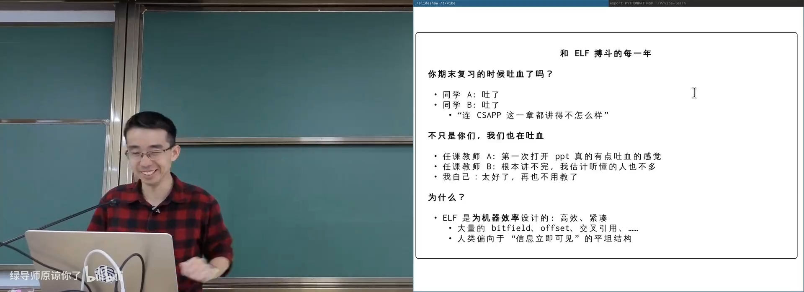
📷 ELF 中大量 offset 与 bitfield 的可读性问题
回到原视频 (00:08:20)
2. FLE：把 ELF 换成人类可读的等价描述
2.1 “等价描述之间可以转换”
(参考时间: 00:12)
ELF 本质上只是一个描述：
- 基本属性：版本、体系结构、格式类型；
- 内存布局：哪些数据加载到什么位置、拥有什么权限；
- 链接信息：符号、重定位和导出定义；
- 辅助信息：调试信息、注释和其它元数据。
因此，完全可以把 ELF 转换为另一种等价格式，再实现自己的加载器：
- 把 ELF 转为人类可读的 JSON、Markdown、图形或自定义 DSL；
- 在其中直接表示代码、数据和重定位；
- 实现一个能够加载这种格式的 loader；
- 用已知程序验证运行结果。
这就是 Funny Little Executable（FLE） 的出发点。
flowchart LR
A["ELF 二进制描述"] --> B["语义等价的自定义格式"]
B --> C["FLE compiler / linker"]
C --> D["FLE loader"]
D --> E["进程初始内存状态"]
E --> F["验证程序行为"]
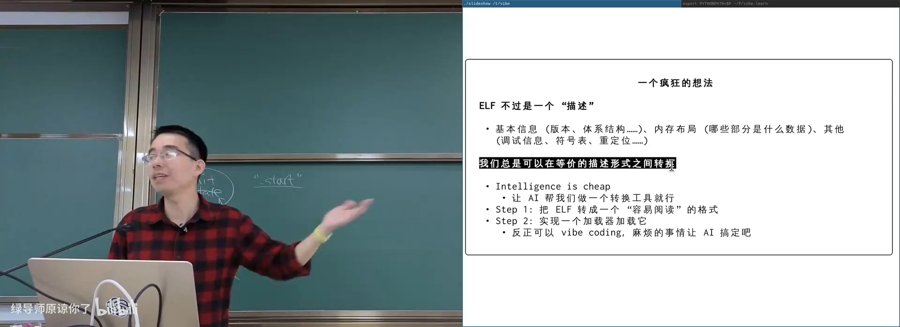
📷 FLE 将 ELF 转换成更直观的描述形式
回到原视频 (00:14:30)
2.2 JSON 与可视化
FLE 早期把二进制内容表示为 JSON：符号、代码、导入导出和重定位都直接放在一起。它还引入 emoji 和视觉标记，使阅读者能迅速辨认不同结构。
讲师提到自己多年来一直在改进 FLE。随着 AI 可以生成实现代码，设计者需要做的更多是：
- 提出一个好的表示形式；
- 明确链接器与加载器的语义；
- 识别哪些复杂度可以被描述形式消除；
- 设计验证程序。
{
"type": "executable",
"symbols": {
"_start": 15
},
"instructions": [
"mov ...",
"syscall"
]
}
flowchart TD
A["设计可读格式"] --> B["编译器生成"]
B --> C["链接器解析符号与重定位"]
C --> D["加载器映射到内存"]
D --> E["执行"]
E --> F{"行为是否正确？"}
F -- "否" --> A
F -- "是" --> G["格式设计有效"]
2.3 用 Markdown 写可执行文件
(参考时间: 00:18)
如果重新设计，可以直接用 Markdown：
# ELF [class=64 endian=le osabi=sysv machine=x86_64 type=ET_DYN pie=true entry=_start]
## PT_LOAD [flags=R|X align=0x1000]
### .text [type=PROGBITS flags=A|X align=16]
_start:
48 c7 c0 01 00 00 00 # mov rax,1 ; sys_write
48 c7 c7 01 00 00 00 # mov rdi,1 ; fd=1
48 8d 35 {pcrel32: msg - . - 4} # lea rsi,[rip+msg]
48 c7 c2 {u32: msg_end - msg} # mov rdx,len
0f 05 # syscall
## PT_LOAD [flags=R align=0x1000]
### .rodata [type=PROGBITS flags=A|R align=16]
_msg:
48 65 6c 6c 6f 2c 20 4d 44 21 0a # "Hello, MD!\n"
重定位不再只是神秘的 R_X86_64_PC32，而是直观表达式：
pcrel32: msg - . - 4
它表示：在当前位置留出一个四字节字段，链接完成后填入 msg - . - 4 的值。
这就是链接的核心之一：符号确定位置后，把需要的数值填入指定位置。
flowchart TD
A["汇编指令中留出 4 字节空位"] --> B["符号 msg 获得相对位置"]
B --> C["计算 msg - . - 4"]
C --> D["链接器写入 32 位结果"]
D --> E["指令获得正确的 PC-relative 操作数"]
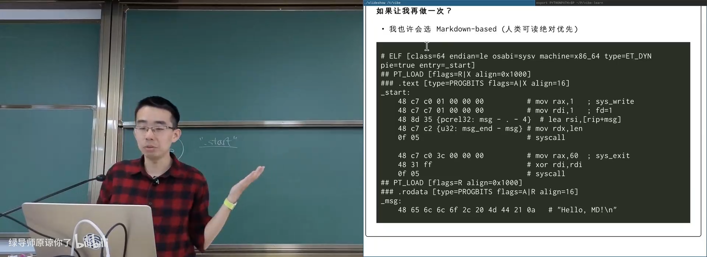
📷 Markdown 风格 FLE 描述与重定位表达式
回到原视频 (00:18:40)
2.4 AI 时代的知识组织
(参考时间: 00:23)
讲师进一步反思：过去的教学大量投入在构造可视化、调试和解释工具上，而现在这些工具可以通过 prompt 和 AI 快速生成。
新的学习重点变成：
- 知道问题是什么；
- 知道有哪些可转换的表示形式；
- 构建知识网络，把概念联系到一起；
- 提出可以验证的假设；
- 使用 AI 探索设计空间；
- 通过程序真实运行结果确认结论。
只要“链接和加载”这一概念被准确理解，具体格式既可以是 JSON、Markdown，也可以是 SVG 图形。程序最终是否真的打印出 Hello，是对整个工具链最直接的验证。
flowchart TD
A["概念与知识网络"] --> B["提出问题"]
B --> C["让 AI 生成实现"]
C --> D["运行程序验证"]
D --> E{"结果符合预期？"}
E -- "是" --> F["确认理解并沉淀结论"]
E -- "否" --> G["质疑设计 / 调试 / 重试"]
G --> B
2.5 重定位：留空，再填数
(参考时间: 00:24)
在对象文件中定义一个外部符号：
extern int x;
int f(void) {
x = 1;
return 0;
}
编译：
cc -c a.c -o a.o
readelf -r a.o
readelf -a a.o
对象文件中的指令可能先把地址字段留为 0：
0000000000000000 R_AARCH64_ADR_PREL_PG_HI21 x
0000000000000000 R_AARCH64_ADD_ABS_LO12_NC x
链接器在确定 x 的最终位置后，重新计算并把结果填进去。
flowchart LR
A["编译 a.c"] --> B["指令中预留地址位"]
B --> C["生成 relocation entry"]
C --> D["链接器读取符号表"]
D --> E["确定 x 的地址"]
E --> F["回填指令字段"]
F --> G["可执行文件可运行"]
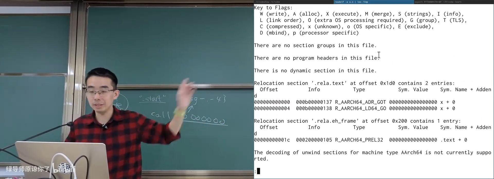
📷 `readelf -r` 展示对象文件中的重定位记录
回到原视频 (00:24:45)
3. Linux 内核中的加载器
3.1 binfmt_elf.c
(参考时间: 00:29)
加载器不是用户态库，而是内核中 execve 实现的一部分。Linux 源码中：
fs/binfmt_elf.c负责加载 ELF；fs/binfmt_script.c负责 shebang 脚本；- 每个
binfmt模块注册自己能够识别的文件特征。
binfmt_elf.c 中可以看到课堂上讲过的所有概念：
- ELF header 验证；
- program header 遍历；
PT_LOAD映射；- initial process stack；
argc、argv、envp；- auxiliary vector；
- interpreter 和动态链接相关入口。
flowchart TD
A["execve"] --> B["do_execveat_common"]
B --> C["读取文件头"]
C --> D{"binfmt handlers"}
D -- "ELF 魔数" --> E["binfmt_elf.c"]
D -- "#!" --> F["binfmt_script.c"]
E --> G["load_elf_binary"]
F --> H["启动解释器"]
G --> I["建立进程初始状态"]
Linux 有数万个源文件，但 AI 能够根据具体问题按需读取和关联代码。课堂展示了它读取 binfmt_elf.c 后，继续追踪 create_elf_tables()、AT_SYSINFO_EHDR、vDSO 和相关架构宏的过程。
flowchart LR
A["目标程序入口"] --> B["load_elf_binary"]
B --> C["验证 ELF 与 program headers"]
C --> D["映射 PT_LOAD 段"]
D --> E["create_elf_tables"]
E --> F["在栈上布置 argc / argv / envp"]
F --> G["布置 auxv"]
G --> H["设置入口 PC"]
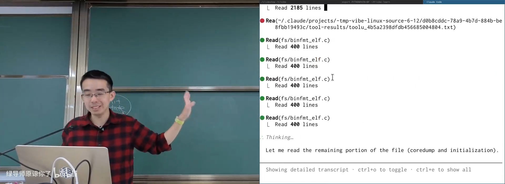
📷 AI 在内核源码中追踪 ELF 加载流程
回到原视频 (00:30:35)
3.2 Shebang：文本文件为何可执行
(参考时间: 00:36)
如果一个脚本以：
#!/bin/bash
echo hello
开头，并拥有执行权限：
chmod +x a.sh
./a.sh
内核无法把普通文本当作机器码执行。binfmt_script 会识别前两个字节 #!，然后：
- 读取第一行剩余部分；
- 找到解释器路径；
- 把脚本文件作为解释器的参数再次执行。
/* Linux binfmt_script 的核心判断。 */
if (buf[0] != '#' || buf[1] != '!') {
return -ENOEXEC;
}
flowchart TD
A["execve(./a.sh, ...)"] --> B["读取文件头"]
B --> C{"前两个字节是 #! ？"}
C -- "否" --> D["尝试其它 binfmt"]
C -- "是" --> E["解析 interpreter 路径和参数"]
E --> F["execve(interpreter, adjusted_argv, envp)"]
F --> G["解释器读取脚本并执行"]
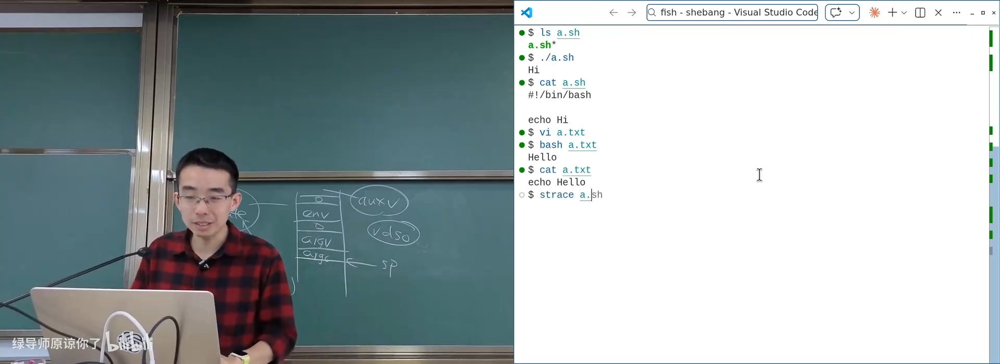
📷 直接 `execve` 一个 shebang 脚本
回到原视频 (00:36:50)
3.3 Shebang 的参数如何拼接
(参考时间: 00:39)
假设脚本 S 第一行是：
#!A B C
执行：
./S x y
Linux 会近似转换为：
execve(
"A",
(char *[]){"A", "B C", "./S", "x", "y", NULL},
envp
);
注意 Linux 会把 shebang 第一行解释器之后的整个部分 "B C" 当成一个参数，而脚本路径 ./S 再插到它后面。
POSIX 没有完全规定这个细节。macOS 等 BSD 系统会把 B 和 C 拆成两个参数，因此跨平台脚本不应依赖这一点。
flowchart LR
A["脚本第一行 #!A B C"] --> B["解释器路径 A"]
A --> C["附加参数 B C"]
D["./S x y"] --> E["脚本路径 ./S"]
D --> F["用户参数 x y"]
B --> G["execve argv"]
C --> G
E --> G
F --> G
G --> H["Linux: A, 'B C', ./S, x, y"]
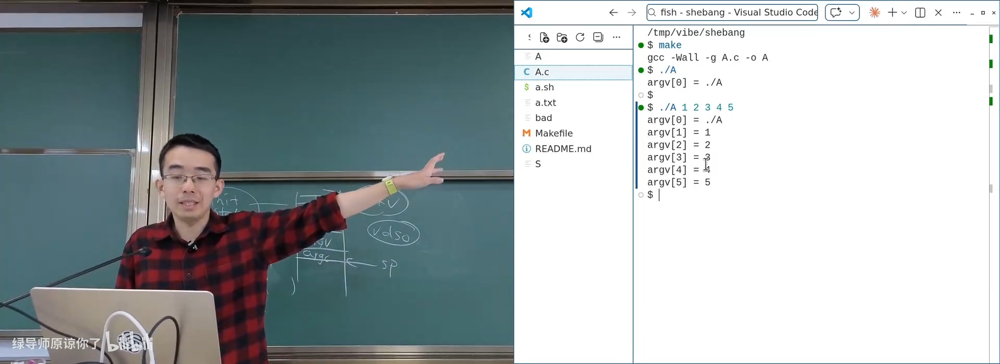
📷 通过自定义解释器打印 shebang 的参数布局
回到原视频 (00:39:05)
3.4 静态链接到此结束
(参考时间: 00:43)
静态链接程序的加载过程可以总结为：
- 内核解析 ELF；
- 映射所有需要的段；
- 建立 initial process stack；
- 跳到静态链接的
_start； - 由 C Runtime 初始化并调用
main。
问题出现在库规模增长以后：如果系统有数千个程序，每个都复制一份 libc，就会浪费磁盘空间，安全更新也必须重新链接所有程序。
flowchart TD
A["静态链接可执行文件"] --> B["包含程序代码"]
A --> C["包含完整 libc"]
A --> D["包含其它静态库"]
B --> E["每个程序一个副本"]
C --> E
D --> E
E --> F["磁盘与升级成本增加"]
4. 为什么需要动态链接
4.1 共享库减少磁盘和更新成本
(参考时间: 00:44)
动态链接把应用代码与运行库拆开：
app
+-- libc.so
+-- libm.so
+-- libreadline.so
+-- libjvm.so
系统级共享库可以只保留一个副本，并且只要保持 ABI 兼容，就能独立升级。大型项目也能被分解成多个 .so 模块。
课程以 NEMU 类比：把模拟器编译成 libnemu.so，外部框架像“主板”一样把它加载起来，CPU 模块与其它外设模块通过动态库接口协作。
flowchart TD
A["单体静态程序"] --> B["拆分应用逻辑"]
B --> C["可执行文件"]
B --> D["libc.so"]
B --> E["libm.so"]
B --> F["业务模块 .so"]
C --> G["运行时加载共享库"]
D --> G
E --> G
F --> G
4.2 /proc/<pid>/maps 中的共享库
(参考时间: 00:47)
查看某个进程：
pmap <pid>
cat /proc/<pid>/maps
可以看到：
- 可执行文件自身的代码段与数据段；
libc.so；libgcc_s.so；libpcre2等依赖库；- vDSO；
- 动态链接器。
同一个 .so 在不同进程地址空间中的虚拟地址可以不同，也可以指向相同的物理页面。
flowchart LR
A["Process A virtual memory"] --> X["libc.so code: read-only"]
B["Process B virtual memory"] --> X
C["Process C virtual memory"] --> X
X --> P["同一份物理页"]
A --> DA["私有数据段"]
B --> DB["私有数据段"]
C --> DC["私有数据段"]
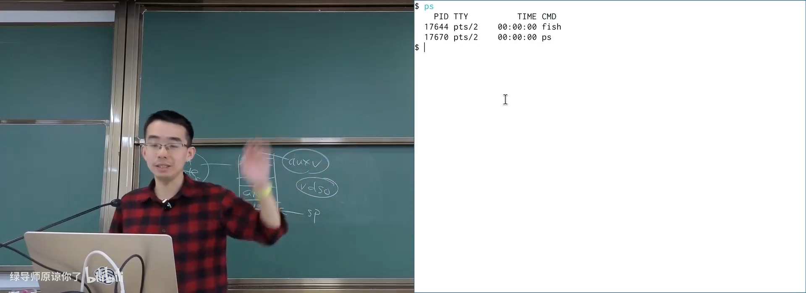
📷 进程映射中动态链接库的共享代码段
回到原视频 (00:47:44)
4.3 用 bloat() 验证内存共享
(参考时间: 00:49)
为验证动态链接库确实共享物理内存，课程构造了一个极端的实验：
- 用内联汇编生成大量 NOP；
- 把它们编译进
libbloat.so； - 在 AArch64 上，一条 NOP 占 4 字节；
- 生成约 40 MB 的共享库；
- 编写
sample，通过dlopen加载并调用bloat()。
void *handle = dlopen("./libbloat.so", RTLD_NOW);
typedef void (*bloat_fn)(void);
bloat_fn bloat = (bloat_fn)dlsym(handle, "bloat");
bloat();
printf("bloat at %p\n", (void *)bloat);
flowchart TD
A["libbloat.so: 约 40MB NOP"] --> B["sample 进程 dlopen"]
B --> C["解析符号 bloat"]
C --> D["调用 bloat()"]
D --> E["打印函数虚拟地址"]
E --> F["多个进程地址不同"]
F --> G["ASLR 造成虚拟地址随机化"]
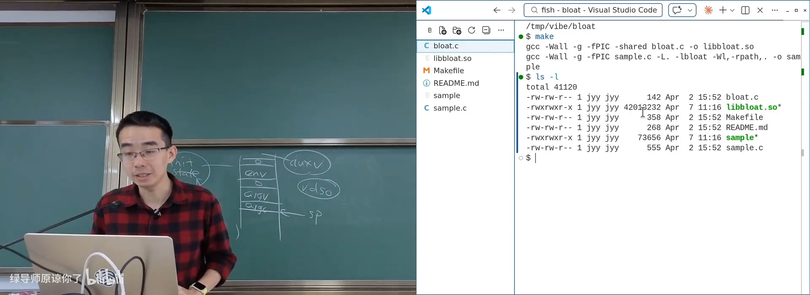
📷 加载包含大量 NOP 的 `libbloat.so`
回到原视频 (00:49:35)
4.4 启动 1000 个进程
(参考时间: 00:51)
如果每个进程都复制 40 MB，1000 个进程需要约 40 GB 物理内存。实验机器只有 8 GB，却成功运行 1000 个 sample 进程。
系统内存占用保持正常，说明只读的库代码页确实被多个进程共享。
flowchart TD
A["启动 sample 1000 次"] --> B["每个进程映射 libbloat.so"]
B --> C["只读代码页指向同一物理页面"]
C --> D["物理内存不会按 40GB 线性增长"]
D --> E["证明动态库代码页共享"]
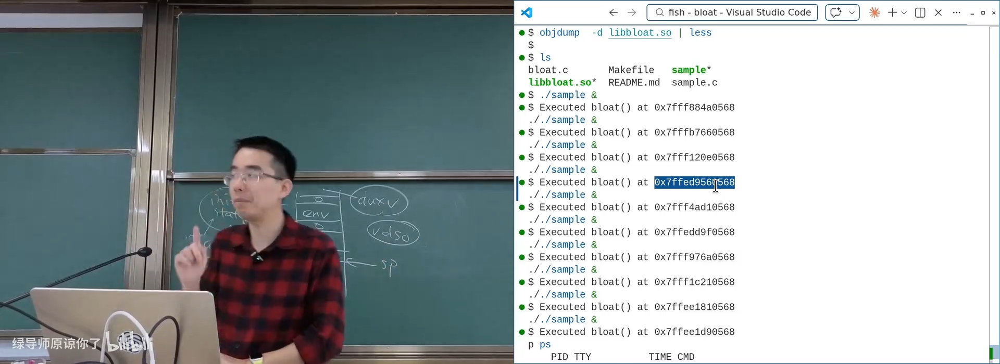
📷 1000 个进程共享同一个大型动态库
回到原视频 (00:51:00)
4.5 lsof 与 /proc 的实现关系
(参考时间: 00:53)
查看一个库被哪些进程映射：
lsof libbloat.so
可以找到约 1000 个进程，其中额外一项可能是 lsof 自己短暂打开的引用。
lsof 的实现并不神秘。它扫描：
/proc/<pid>/maps
/proc/<pid>/fd/
/proc/<pid>/...
找到进程打开或映射的文件。这与课程中遍历 procfs 实现进程、管道和文件描述符工具的路线完全一致。
flowchart TD
A["lsof libbloat.so"] --> B["遍历 /proc 下所有 PID"]
B --> C["读取 /proc/PID/maps 与 fd"]
C --> D["匹配 libbloat.so 路径"]
D --> E["输出引用该库的进程"]
E --> F["证实动态库被多个进程共享"]
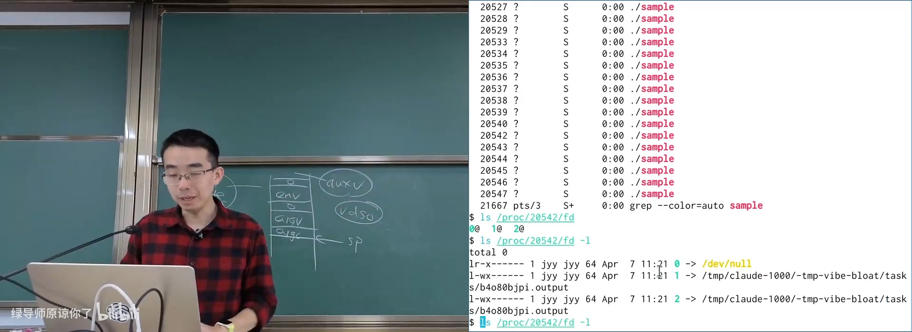
📷 `lsof` 遍历 procfs 查找库的引用者
回到原视频 (00:53:50)
5. 动态链接程序的加载
5.1 先有鸡还是先有蛋
(参考时间: 00:57)
静态链接程序的 ELF entry 指向 _start，而 _start 来自 crt1.o。随后它调用 __libc_start_main，后者再运行 main。
动态链接产生三个相互依赖的问题：
- 程序需要
_start，但_start位于运行时对象； _start要调用动态库中的__libc_start_main；- 在动态库尚未加载时，这个函数根本不存在。
答案就是动态链接器解释器。
flowchart TD
A["程序需要 _start"] --> B["crt1.o 静态链接进程序"]
B --> C["_start 需要 __libc_start_main"]
C --> D["该函数位于 libc.so"]
D --> E["需要先加载 libc.so"]
E --> F["谁加载 libc.so？"]
F --> G["PT_INTERP 指定的 ld.so"]
5.2 PT_INTERP 指向动态链接器
(参考时间: 00:58)
查看动态链接程序：
readelf -l ./a.out | grep interpreter
可以看到：
[Requesting program interpreter: /lib/ld-musl-aarch64.so.1]
glibc 程序通常使用：
/lib64/ld-linux-x86-64.so.2
ELF 文件中的 PT_INTERP 只是一段字符串。内核读取它，把对应文件也映射进进程，然后把初始 PC 设置为动态链接器的入口。
flowchart TD
A["动态链接 ELF"] --> B["PT_INTERP 字符串"]
B --> C["内核打开 interpreter"]
C --> D["映射 ld.so"]
D --> E["PC ← ld.so entry"]
E --> F["ld.so 加载依赖库"]
F --> G["跳回程序 _start"]
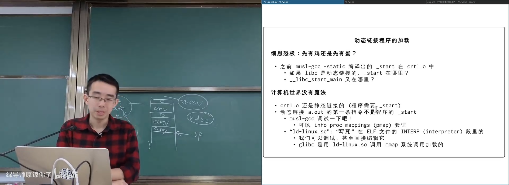
📷 glibc 与 musl 使用不同的 ELF interpreter
回到原视频 (00:58:25)
5.3 第一条指令不属于程序
(参考时间: 01:00)
使用 GDB：
gdb ./a.out
(gdb) starti
对动态链接程序，starti 停在动态链接器的 _dl_start，不是程序自身的 _start。
此时：
- 程序自身的段已经被映射；
ld.so已经被内核映射；libc.so和 C++ 运行库等依赖通常还没有全部加载；ld.so接管 initial process stack 中的argc、argv、envp和 auxv。
flowchart LR
A["内核映射主程序"] --> B["内核映射 PT_INTERP"]
B --> C["PC = ld.so entry"]
C --> D["_dl_start"]
D --> E["解析依赖库"]
E --> F["重定位符号"]
F --> G["调用程序 _start"]
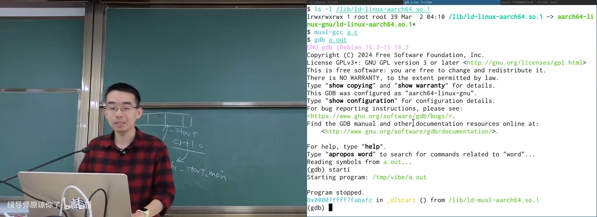
📷 GDB 在动态链接器 `_dl_start` 处停下
回到原视频 (01:01:44)
5.4 修改 PT_INTERP 测试加载流程
(参考时间: 01:04)
课程直接编辑 ELF 中的 interpreter 字符串，把 ld-musl-aarch64.so.1 改成不存在的 ld-musl-aarch65.so.1。
结果：
No such file or directory
随后创建一个指向真实 musl loader 的同名符号链接，程序又可以运行。
这说明动态链接器路径完全是可验证的文件系统数据，不是某种隐藏魔法。
flowchart TD
A["原 PT_INTERP: ld-musl-aarch64.so.1"] --> B["程序正常运行"]
C["修改为 ld-musl-aarch65.so.1"] --> D["解释器文件不存在"]
D --> E["execve 失败"]
F["创建 aarch65 符号链接"] --> G["文件路径重新有效"]
G --> H["程序恢复运行"]
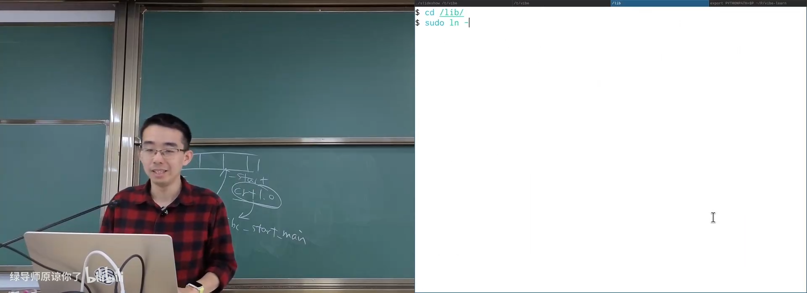
📷 直接修改 ELF 中的 `PT_INTERP` 字符串
回到原视频 (01:05:00)
5.5 动态链接器加载完整依赖
(参考时间: 01:06)
在 starti 时查看：
info proc mappings
glibc 程序的映射中已经有：
- 主程序；
- vDSO；
ld-linux.so；- 初始栈。
但 libc.so 还没映射。在程序 _start 处打断点并 continue 后，再次查看 mappings，就能看到 libc.so 已被加载。
flowchart TD
A["初始 PC 位于 ld.so"] --> B["mappings: 主程序 + ld.so + vDSO"]
B --> C["ld.so 解析 DT_NEEDED"]
C --> D["加载 libc.so 等依赖"]
D --> E["建立 GOT / 重定位"]
E --> F["跳转到程序 _start"]
F --> G["mappings 中已有 libc.so"]
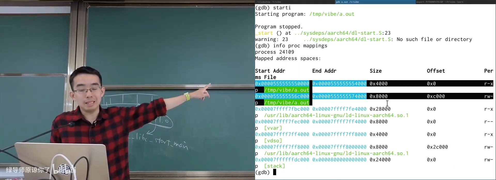
📷 动态链接器完成依赖加载后的内存映射
回到原视频 (01:06:50)
5.6 最小初始状态
(参考时间: 01:08)
在动态链接程序第一条指令执行时，进程状态可以精确描述为：
- initial process stack，包含
argc、argv、envp和 auxv； - 主程序需要加载的段；
PT_INTERP指定的动态链接器；- vDSO 和内核辅助数据；
- 当前 PC 位于动态链接器入口。
除此之外，没有别的用户态代码被预先加载。动态链接器随后负责构造完整程序。
flowchart TD
A["第一条用户态指令之前"] --> B["Initial Process Stack"]
A --> C["Program PT_LOAD segments"]
A --> D["Dynamic Loader from PT_INTERP"]
A --> E["vDSO / auxv"]
A --> F["PC = ld.so entry"]
B --> G["开始动态链接"]
C --> G
D --> G
E --> G
F --> G
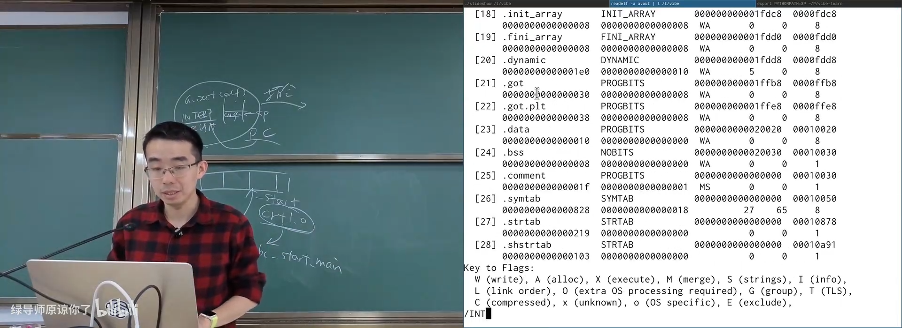
📷 程序 `PT_INTERP` 中真正保存的 loader 路径
回到原视频 (01:09:00)
6. ld.so 手册：动态链接工具金矿
(参考时间: 01:09)
man 8 ld.so 详细记录了动态链接器行为：
LD_LIBRARY_PATH：追加共享库搜索路径；LD_BIND_NOW：启动时解析全部符号，关闭延迟绑定；LD_DEBUG：输出库加载、符号解析和重定位等调试信息；LD_SHOW_AUXV：打印内核传递的 auxiliary vector；LD_PRELOAD：在普通依赖之前预加载共享库。
flowchart LR
A["ld.so manual"] --> B["搜索路径策略"]
A --> C["符号绑定策略"]
A --> D["调试输出"]
A --> E["auxv 展示"]
A --> F["LD_PRELOAD 符号覆盖"]
6.1 LD_DEBUG=libs
(参考时间: 01:12)
LD_DEBUG=libs ls
LD_DEBUG=libs code
输出会显示程序加载的所有共享库，包括启动时不容易注意到的依赖。
flowchart TD
A["LD_DEBUG=libs ls"] --> B["ld.so 打印搜索路径"]
B --> C["加载 DT_NEEDED 依赖"]
C --> D["输出每次 find / load / init"]
D --> E["辅助诊断缺失库与版本问题"]
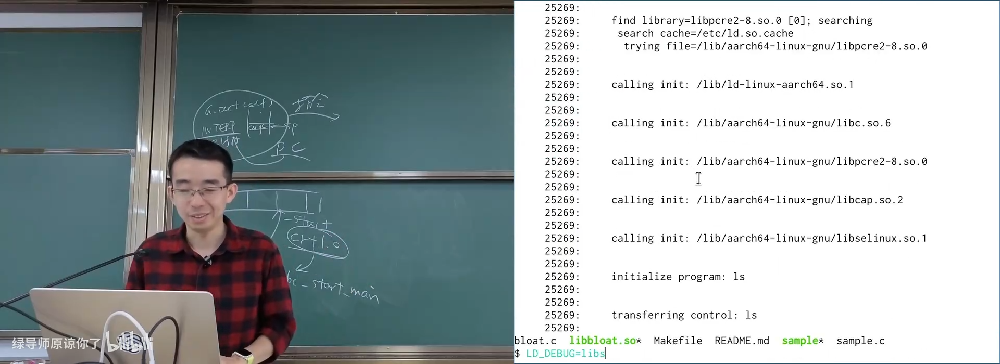
📷 `LD_DEBUG=libs` 展示动态库加载过程
回到原视频 (01:12:15)
6.2 ldd
(参考时间: 01:12)
ldd /bin/ls
ldd /usr/bin/gcc
ldd 会模拟动态加载器，递归解析程序依赖，并展示每个需要的共享库最终对应哪个文件。
flowchart LR
A["ELF 可执行文件"] --> B["读取 DT_NEEDED"]
B --> C["模拟 ld.so 搜索"]
C --> D["递归处理依赖"]
D --> E["输出所需共享库列表"]
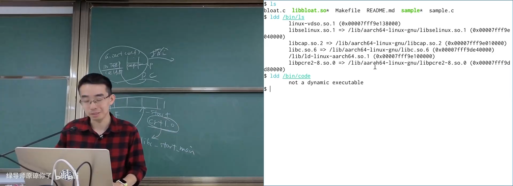
📷 `ldd` 递归解析可执行文件的动态库依赖
回到原视频 (01:13:20)
6.3 LD_SHOW_AUXV
(参考时间: 01:14)
LD_SHOW_AUXV=1 ls
辅助向量中常见字段包括：
AT_SYSINFO_EHDR：vDSO 地址；AT_RANDOM：随机数种子地址；AT_PHDR：ELF program headers 地址；AT_ENTRY：程序入口；AT_BASE：动态链接器基址。
每次运行，vDSO 地址和随机数都会变化，这正是 ASLR 的结果。
flowchart TD
A["内核准备 auxv"] --> B["AT_SYSINFO_EHDR: vDSO"]
A --> C["AT_RANDOM: 随机种子"]
A --> D["AT_PHDR: program headers"]
A --> E["AT_ENTRY: 程序入口"]
A --> F["AT_BASE: 动态链接器基址"]
B --> G["ld.so / libc 读取 auxv"]
C --> G
D --> G
E --> G
F --> G
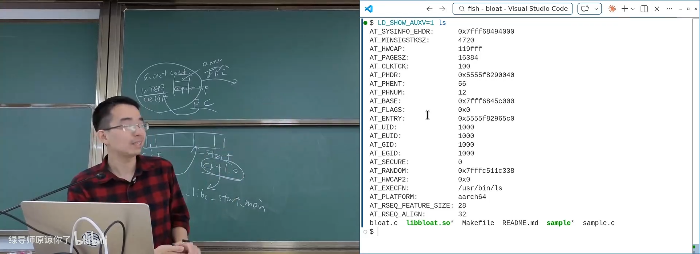
📷 `LD_SHOW_AUXV=1` 打印真实初始辅助向量
回到原视频 (01:14:30)
7. LD_PRELOAD：动态链接的 Hook 机制
7.1 先到先得与符号覆盖
(参考时间: 01:16)
动态链接器解析一个未定义符号时，会按加载顺序查找已加载对象：
第一个提供该符号的对象胜出。
LD_PRELOAD 让指定共享库先于通常依赖被加载。因此，只要它定义了同名符号，就能覆盖后续库中的实现。
flowchart TD
A["程序引用 printf"] --> B["ld.so 搜索已加载对象"]
B --> C{"LD_PRELOAD 提供 printf？"}
C -- "是" --> D["绑定到预加载实现"]
C -- "否" --> E["继续搜索 libc"]
E --> F["绑定 libc printf"]
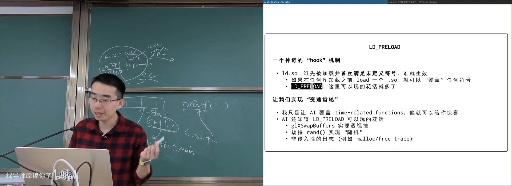
📷 `LD_PRELOAD` 通过先加载实现符号覆盖
回到原视频 (01:16:55)
7.2 Hook 仍然调用原实现
可以用 dlsym(RTLD_NEXT, ...) 找到下一个同名实现：
#define _GNU_SOURCE
#include <dlfcn.h>
#include <time.h>
typedef time_t (*time_fn)(time_t *);
time_t time(time_t *loc) {
static time_fn real_time;
if (!real_time) {
real_time = (time_fn)dlsym(RTLD_NEXT, "time");
}
puts("time() intercepted");
return real_time(loc);
}
这既是覆盖，也是 hook：
- 调用者仍得到原函数语义；
- 可以在前后插入日志、修改参数或修改返回值；
- 不需要重新编译目标程序。
flowchart LR
A["目标程序调用 time"] --> B["预加载 time hook"]
B --> C["记录 / 修改参数"]
C --> D["dlsym(RTLD_NEXT) 获取原 time"]
D --> E["调用真正的 time"]
E --> F["记录 / 修改返回值"]
F --> G["返回调用者"]
7.3 变速齿轮：改变应用对时间的感知
(参考时间: 01:17)
时间相关程序最终依赖若干 API：
gettimeofday；clock_gettime；usleep/nanosleep；alarm；select/poll的超时参数。
通过 LD_PRELOAD 覆盖这些函数，可以维护一个虚拟时间轴：
real_elapsed = real_now - real_start
virtual_elapsed = real_elapsed * speed_factor
virtual_now = virtual_start + virtual_elapsed
程序请求睡眠时，把睡眠时间除以倍率；程序读取时间时，返回缩放后的虚拟时间。于是程序认为自己正常运行，实际却以更高速度前进。
flowchart TD
A["启动时记录真实时间与虚拟时间"] --> B["应用调用时间函数"]
B --> C{"读取时间还是等待？"}
C -- "读取时间" --> D["按倍率计算虚拟当前时间"]
C -- "sleep / timeout" --> E["真实等待时间除以倍率"]
D --> F["返回虚拟时间"]
E --> G["提前返回"]
F --> H["应用观察到加快的时间轴"]
G --> H
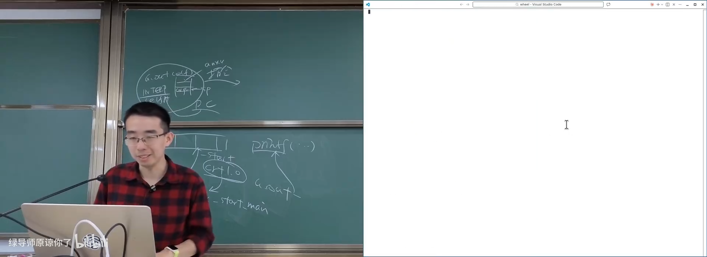
📷 时间 hook 共享库覆盖多组 API
回到原视频 (01:17:59)
7.4 贪吃蛇与 cmatrix
(参考时间: 01:19)
运行：
LD_PRELOAD=./libwheel.so ./n-snake
LD_PRELOAD=./libwheel.so ./cmatrix
sleep 1
LD_PRELOAD=./libwheel.so sleep 1
贪吃蛇明显变快，cmatrix 的字符下落速度也接近十倍。原程序没有重新编译，只是动态链接时的符号绑定发生了变化。
flowchart LR
A["原程序"] --> B["LD_PRELOAD=libwheel.so"]
B --> C["时间 API 绑定到 hook"]
C --> D["snake 变快"]
C --> E["cmatrix 变快"]
C --> F["sleep 1 约 0.1 秒返回"]
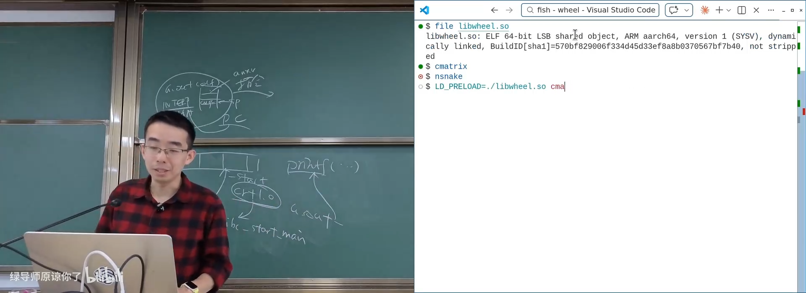
📷 通过 `LD_PRELOAD` 加速终端贪吃蛇
回到原视频 (01:19:45)
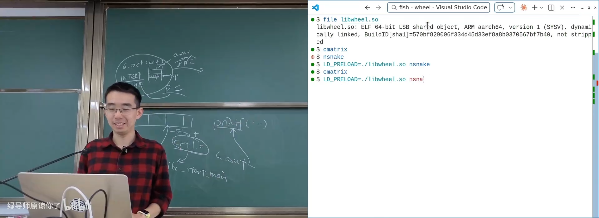
📷 `cmatrix` 在十倍虚拟时间下加速运行
回到原视频 (01:20:10)
7.5 其它 Hook 场景
(参考时间: 01:21)
LD_PRELOAD 还能用于：
- 覆盖
malloc/free，记录分配与释放轨迹； - 劫持
rand()或随机种子，控制“随机”结果； - 包装文件或网络 API，实现非侵入式日志；
- 覆盖图形交换函数，研究渲染与游戏行为；
- 在测试中注入错误、延迟或特定返回值。
flowchart TD
A["LD_PRELOAD"] --> B["内存 API: malloc/free"]
A --> C["随机 API: rand/srand"]
A --> D["文件 API: open/read/write"]
A --> E["时间 API: clock/sleep"]
A --> F["图形 API: swap buffers"]
B --> G["追踪 / 注入 / 行为修改"]
C --> G
D --> G
E --> G
F --> G
8. PLT 与 GOT：动态链接如何完成跳转
8.1 近跳转无法覆盖整个地址空间
(参考时间: 01:22)
编译器通常会为函数调用生成 PC-relative 跳转：
- AArch64
bl的立即数约 26 位，范围约 ±128 MiB； - x86-64
call rel32的范围约 ±2 GiB； - 对象文件中未解析符号会先留下 0 或占位值。
如果 f() 与 main() 在同一可执行文件中，链接器能算出正确相对距离。
但 printf() 位于共享库，运行时地址未知，而且可能落在超出近跳转范围的位置。
flowchart TD
A["编译器生成 call printf"] --> B["需要 32 位 / 26 位 PC-relative 位移"]
B --> C{"printf 是否在链接时可确定？"}
C -- "是" --> D["链接器直接回填"]
C -- "否" --> E["需要间接跳转机制"]
E --> F["Procedure Linkage Table (PLT)"]
8.2 PLT 与 GOT
(参考时间: 01:24)
动态链接程序把调用转换为：
call printf@plt
printf@plt 是一小段 trampoline。典型逻辑是：
printf@plt:
jmp *printf@got(%rip)
GOT 是 Global Offset Table，保存动态链接器在运行时解析出的真实地址。
flowchart LR
A["main call printf@plt"] --> B["PLT entry"]
B --> C["读取 GOT[printf]"]
C --> D["获得 printf 真实地址"]
D --> E["跳转到 libc printf"]
F["ld.so 运行时重定位"] --> C
首次调用时还可能经过动态链接器解析；使用 now binding 或解析完成表已经被回填后，通常只需 PLT 查表并跳转。
sequenceDiagram
participant App as main
participant PLT as printf@plt
participant GOT as GOT
participant Loader as ld.so
participant Libc as libc printf
App->>PLT: call printf@plt
PLT->>GOT: read printf address
alt 尚未解析
GOT-->>PLT: resolver trampoline
PLT->>Loader: resolve printf
Loader->>GOT: write real address
end
PLT->>Libc: jump
Libc-->>App: return
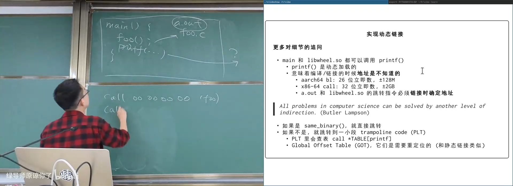
📷 ELF 中的 PLT 与动态函数调用路径
回到原视频 (01:24:00)
8.3 数据不能像代码一样“两级跳转”
(参考时间: 01:27)
函数调用可以用 PLT 间接跳转，但数据访问更麻烦：
extern int x;
x = 1;
如果 x 与代码在同一共享对象中，编译器可以生成一条直接的 store：
movl $1, x(%rip)
如果 x 可能来自另一个共享对象，地址在加载时才知道，只能先查 GOT：
mov x@GOTPCREL(%rip), %rax
movl $1, (%rax)
这就是 -fPIC 下外部数据访问通常需要多一层间接寻址的原因。它保证位置无关，但会带来性能和代码大小成本。
flowchart TD
A["写 extern int x"] --> B{"x 是否在同一共享对象且本地绑定？"}
B -- "是" --> C["mov $1, x(%rip)"]
B -- "否 / 默认 PIC" --> D["从 GOT 读取 x 地址"]
D --> E["mov $1, (address)"]
F["hidden visibility"] --> G["允许编译器省略间接层"]
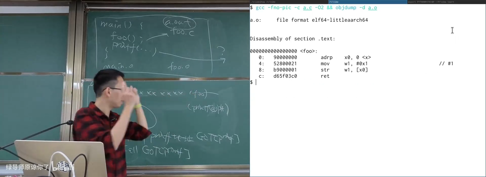
📷 `-fPIC` 对外部数据增加 GOT 间接访问
回到原视频 (01:28:20)
8.4 一层间接解决不了，就再加一层
动态链接中的核心模式是 indirection：
- 函数调用通过 PLT 间接跳转；
- 真实函数地址放在 GOT；
- 外部数据地址也可能放在 GOT；
- 动态链接器负责在加载时重定位这些表。
flowchart BT
A["程序代码"] --> B["PLT / GOT"]
B --> C["运行时真实地址"]
C --> D["共享库代码或数据"]
E["ld.so"] --> F["解析符号"]
F --> G["重定位 GOT"]
G --> B
9. 总结：从文件到运行中的进程
这一讲把可执行文件、链接和加载串成了一条完整路径：
- 可执行文件是文件对象，也是进程初始状态的描述；
a.out展示早期静态格式的简单性；- ELF 为机器效率设计，强大但复杂；
- FLE 证明二进制格式可以在等价描述之间转换；
- Linux 内核通过
binfmt_elf.c加载 ELF； binfmt_script.c实现 shebang 和解释器启动；- 动态链接减少磁盘、内存和更新成本；
- 大量进程可以共享同一个共享库的只读代码页；
- 动态链接程序第一条指令来自
PT_INTERP指定的ld.so； ld.so加载依赖、重定位符号，然后调用程序_start；LD_DEBUG、LD_SHOW_AUXV和ldd让动态链接过程可观察；LD_PRELOAD通过符号绑定顺序实现强大的 hook；- PLT 与 GOT 用间接层解决远地址和运行时重定位问题。
flowchart LR
A["ELF 文件"] --> B["内核 execve"]
B --> C["映射主程序"]
C --> D["映射 PT_INTERP: ld.so"]
D --> E["ld.so 加载依赖库"]
E --> F["重定位 PLT / GOT"]
F --> G["跳转到程序 _start"]
G --> H["C Runtime"]
H --> I["main"]
I --> J["运行中的进程"]
可执行文件不是一个封闭的黑盒。它是一组关于内存布局、入口、符号和重定位的声明；加载器、动态链接器和运行时共同把这些声明变成真实进程。理解这条链条之后，很多看似神奇的机制，例如脚本执行、共享库内存节省、动态调试和 LD_PRELOAD 外挂，都能被还原为可以观察、验证和实现的具体步骤。
附：官方参考与延伸阅读
以下链接来自官方讲义第 11 讲及课堂内容：
- FreeBSD
a.out(5)manual - System V ABI
- Funny Little Executable
- Andrej Karpathy’s LLM Wiki gist
- Linux
fs/binfmt_elf.c - Linux
fs/binfmt_script.c - CVE-2024-46826
- Shebang demo
- Dynamic linking and bloat demo
- Time-speed hook demo
- Semantic Versioning
阅读材料：
- Operating Systems: Three Easy Pieces 第 17 章，Free Space Management；
- 选读第 18 至 23 章，虚拟内存、分页、TLB、交换与完整 VM 系统。
官方课程资料：
版权与署名：本讲课程材料由蒋炎岩（jyy）编写。课程讲义与幻灯片采用 Creative Commons BY-NC 4.0 许可；本电子书保留课程出处、作者署名与许可说明。